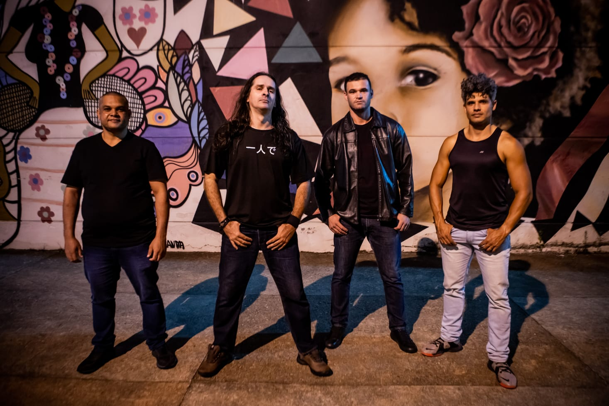

Fotos
Fotos: @luizapalhareslup



A Banda Sturzen (Heavy Metal) é de Minas Gerais, da cidade Betim, região metropolitana de Belo Horizonte. A banda foi formada e está na ativa desde o ano de 2013. A banda começou quando o vocalista Regis Sturzeneker foi convidado para participar da banda onde já tocavam o guitarrista Dieno Barbosa e o baterista Guilherme (amigos desde os tempos de ensino médio), como o projeto não foi para frente, Regis resolveu convidar Guilherme e Dieno para um novo projeto, a atual banda Sturzen, no intuito de fazer músicas autorais (heavy metal em português). O projeto já contava com Thiago Vieira, amigo de Regis, no baixo. De lá pra cá a banda participou de festivais, concursos e apresentações que aconteceram na região metropolitana de Belo Horizonte. com destaque para o Molda Rock Betim 2018, 8° Encontro de Motociclistas de contagem 2015, Garagem Festival-Matriz 2015 e em bares e eventos ligados aos rock'n'roll. Desde o início, apesar de tocar algumas músicas covers de bandas tradicionais de Heavy Metal (Iron Maiden, Metallica, Megadeth, Helloween, Stratovarius, Savatage, Angra, Shaman), o ideal da banda foi compor e fazer suas músicas autorais. Nesse período foi gravando e produzindo de forma independente suas músicas autorais, em estúdio próprio, o que foi um grande aprendizado para todos que participaram do processo. Em nossas músicas, que são compostas e cantadas em português, as letras abordam temas que tem por intuito nos fazer pensar um pouco sobre as vivências e experiências que acontecem em nossa realidade, coisas/fatos que nem percebemos na correria do cotidiano. Durante a pandemia, ocorreram duas trocas de integrantes na banda, primeiro saiu o baixista Thiago Vieira e entrou o baixista D`angelo Mendonça. E, esse ano, novamente o baixista da banda foi substituído, saiu o D`angelo Mendonça e entrou o Marconi Moreira. Seguimos fortes! Estamos trabalhando com muito empenho e dedicação para terminarmos nosso trabalho e lançarmos nosso álbum com as oito músicas em todas as plataformas digitais e também produzir mídia física (cd com encarte) e outros itens promocionais tais como camisa, canecas, bonés. Acreditamos que em breve iremos concretizar esse trampo e com o fim da pandemia, com todos vacinados e seguros, poderemos voltar com tudo aos palcos fazendo o que mais gostamos que é levar nossa música para mais pessoas. Contamos com Regis Sturzeneker nos vocais e na guitarra, Dieno Barbosa na guitarra, Marconi Moreira no baixo e Guilherme Leopoldino na bateria.
Ensaio Aberto Convida VI - 21-04-2022, à partir das 16hs, no Centro Cultural Vila Sta. Rita. Rua Ana Rafael dos Santos, 149 - Bairro: Vila Santa Rita - BH.
Rock da Regina - 26-03-2022, à partir das 16hs, no Centro Cultural Lindeia Regina. Rua Aristolino Basílio de oliveira, 445 - Bairro: Regina - BH.
Contrate-nos!!Estamos nos preparativos finais para o lançamento do nosso álbum de estréia que terá oito faixas, as músicas já foram gravadas e agora estão sendo editadas/mixadas/masterizadas por Regis Sturzeneker no Sturzeneker Music Studio, com previsão de lançamento para 2023.
Fotos: @luizapalhareslup
Vídeo clipe oficial da música O que sinto produzido por banda Sturzen.
Vídeo clipe oficial da música Dias de trovão produzido por banda Sturzen.
Performance da música Violência, não! para a Mostra Periférica de Música 2021 promovida pela Fundação Municipal de Cultura de Belo Horizonte.
Performance da música O que sinto para a Mostra Periférica de Música 2021 promovida pela Fundação Municipal de Cultura de Belo Horizonte.
Performance da música Cicatrizes para a Mostra Periférica de Música 2021 promovida pela Fundação Municipal de Cultura de Belo Horizonte.
Estamos à disposição!
Aqui você encontra todos os produtos da banda Sturzen!

Tamanhos: P, M, G, GG, XG e Baby Look.

Façam seus pedidos pelo tel:
 (31)98560-1417 -
Marconi Moreira Obs: pedidos atendidos sob demanda!!
(31)98560-1417 -
Marconi Moreira Obs: pedidos atendidos sob demanda!!